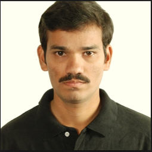

About Professor P. Ramamurthy

Professor P. Ramamurthy is known for his articulacy in teaching the fundamentals of sciences through simple words and as a pioneer in the field of photosciences and ultrafast spectroscopy in India. He is one among the initial pillars that strengthen the Department of Inorganic Chemistry in University of Madras. Along with Prof. P. Natarajan, he dedicated himself to establish the National Centre for Ultrafast Processes (NCUFP) with state of art facilities in Taramani (Chennai), which is unique of its kind and serves the researchers from different parts of our nation for the past 20 years. Students of Prof. P. Ramamurthy, Department of Inorganic Chemistry and NCUFP are immensely proud to honour this eminent scientist by organizing two days workshop on "Photoluminescence and functional materials". Prof. P. Ramamurthy was born in the year 1959 in Chennai. After his successful completion of school education in Chennai, he graduated his bachelors and masters degree from A.M.Jain College, Chennai and Loyola College, Chennai respectively. He completed his doctoral studies under the supervision of Prof. P. Natarajan, FASc., FNA, from the Department of Inorganic Chemistry, University of Madras in 1986. Soon after that, he started his academic career as a lecturer in the same Department in 1987. By 1992, he moved to Laboratoire de Photochimie Générale, France to carry out his post-doctoral work with Prof. Jean-Pierre Fouassier. Later, he returned to the parent Department and subsequently promoted as Reader and Professor of the Department of Inorganic Chemistry, University of Madras and again he visited the same laboratory as visiting scientist in the year 1996. He took charge as Head of the Department in the year 2014. During his academic tenure he has chaired many administrative positions in the University, viz., Director, NCUFP; Director, IQAC; Co-ordinator, DST – PURSE and RUSA 1.0. Currently he is co-ordinating the renovation and upgradation of the Prof. G. N. Ramachandran Instrumentation Centre which is being established as the Central Instrumentation Facility in the University of Madras. Prof. Ramamurthy is a renowned photochemist and has published more than 120 research publications in international and national peer reviewed journals. He has guided 21 Ph.D students and his research interest focuses on photophysics and photochemistry of organic molecules, Fluorescent Sensors, Ultrafast spectroscopy and functional nanomaterials. He has been awarded University Grants Commission ‘Career Award' in 1993 and ‘Bronze Medal' in 2002 by Chemical Research Society of India. He has been elected as a fellow of National Academy of Sciences, Allahabad. In 2004, he has been awarded Tamil Nadu Scientist Award (TANSA). He is a member of many professional bodies like, Chemical Research Society of India, Indian Society for Radiation and Photochemical Sciences and Indian Photobiology Society. He has delivered scientific talks in many international and national conferences. He has completed 12 research projects with financial support from different funding agencies like DST Young Scientist, DST-IRHPA, CSIR, UGC, DAE, ISRO, DST-SERC which has mobilized research grants to the tune of Rs. 625 lakhs to the University of Madras. He has initiated a new Masters programme in "Photonics and Bio photonics" with the financial support from University Grants Commission under Innovative Research and Teaching Programme. After 32 years of his perpetual activities, he is retiring from his service from Department of Inorganic Chemistry, School of Chemical sciences, University of Madras on 30th June 2019.
Short CV of Professor P. Ramamurthy
Publications of Professor P. Ramamurthy
Projects of Professor P. Ramamurthy
Ph.D. Student Details
|
S. No. |
Name |
Thesis title |
Year of completion |
|
1 |
Dr. N. Srividya |
Photophysical, Photochemical and Electrochemical investigations of some acridinedione dyes. |
1996 |
|
2 |
Dr. B. Venkatachalapathy |
Acid-Base Properties and Excited State Reactions of acridinedione dyes with amines: A new family of photoinitiators for polymerization. |
1997 |
|
3 |
Dr. S. S. Jayanthi |
Investigations on the excited state reactions of pyrylium salts and its analogues with electron donors: An emphasis on diffusion, Marcus inverted region, heavy atom and solvent effects. |
1998 |
|
4 |
Dr. A. Sivakumar |
Photosensitisation studies of triaryl sulphonium salts. |
1998 |
|
5 |
Dr. C. Selvaraju |
Investigations on the photphysical, photochemical and solvation dynamics of acridinedione dyes in micelles and their excited state reactions with iodonium salts. |
2004 |
|
6 |
Dr. V. Thiagarajan |
Investigation on the photophysical behavior of novel bichromophoric systems: Fluorogenic chemosensors for ions. |
2005 |
|
7 |
Dr. V. K. Indira Priyadharsini |
Photophysical behavior, rotational dynamics and molecular dynamics approach of resorcinol-based acridinedione dyes in cyclodextrin nanocavities. |
2007 |
|
8 |
Dr. R. Kumaran |
Photophysical studies on the interaction of urea derivatives with acridinedione dyes, bovine serum albumin and L-tryptophan. |
2008 |
|
9 |
Dr. I. Sadhiyabanu |
Photoinduced electron transfer reactions of pyrilium derivatives with organic sulfides in acetonitrile. |
2010 |
|
10. |
Dr. R. Velu |
Design and studies of acridinedione chromophores functionalized gold nanoparticles. |
2010 |
|
11 |
Dr. P. Ashokkumar |
Metal ion and anion binding studies of newly designed acridinedione based fluorescent chemosensors. |
2012 |
|
12 |
Dr. R. Lakshmanan |
Photophysical and photochemical studies on photoinduced electron transfer based acrdinedione dyes in micellar systems. |
2012 |
|
13 |
Dr. N. Dheenadayalan |
Photoionization, solvation dynamics and photoinduced electron transfer reactions of coumarin 307 and coumarin 450 in soft matters. |
2013 |
|
14 |
Dr. R. Krishnaveni |
Synthesis and characterization of acridinedione modified β-CD and Fӧrster resonance energy transfer studies between acridinediones and fluorophores. |
2013 |
|
15 |
Dr. R. Ashokkumar |
Synthesis, characterization, photophysics of Zn-phthalocyanin derivatives and their functionalized nanomaterials. |
2014 |
|
16 |
Dr. T. Shanmugapriya |
Synthesis, characterization and photophysical studies of cadmium sulphide quantum dots and its metal coupled nanoheterostructures. |
2015 |
|
17 |
Dr. T. Senthil Kumar |
Investigation on photoinduced electron transfer and proton coupled electron transfer processes in acridinedione derivatives: application towards sensing metal ions |
2018 |
|
18 |
R. Suresh |
Photophysical investigation of some acridinedione derivatives in three different physical states: application towards finger print marker, fluorogenic detection of fluoride ion and water |
2019 |
|
19 |
V. Ramanan |
Synthesis, characterization, photophysical investigation of fluorescent carbon dots and their applications as donor-acceptor material, bio-imaging probes, and flourescence sensors |
Submitted |
|
20 |
P. Dharmalingam |
Synthesis, photophysical study of lignite derived luminescent carbon dots and investigation of its compatibility in sensor and energy storage applications |
Submitted |
|
21 |
R. Kaviyarasan |
- |
Ongoing |
Current Position of Alumni's
| Narayanan Srividya Senior Scientist Institute of Biological Chemistry Washington state university USA | |
| Dr. B. Venkatachalapathy Professor & Dean Research SRM Easwari Engineering College Chennai | |
| Dr. S. S. Jayanthi Assistant Professor Department of Chemistry Gurunanak College Chennai | |
| Dr. K. Jothivenkatachalam Professor Department of Chemistry Anna University (BIT campus) Trichy | |
| Dr. C. Selvaraju Assistant Professor NCUFP, University of Madras Taramani, Chennai | |
| Dr. V. Thiyagarajan Assistant Professor Department of Chemistry Bharathidasan University Trichy | |
| Dr. V. K. Indira Priyadharsini Research Scientist Australia | |
| Dr. R. Krishnaveni Professor Department of Science and Humanities Saveetha School of Engineering Saveetha University, Chennai | |
| Dr. R. Kumaran Assistant Professor Department of Chemistry D.G. Vaishnav College Chennai | |
| Dr. I. Sadhiya banu Assistant Professor Department of Chemistry JBAS College Chennai | |
| Dr. R. Velu Post Doctoral Fellow Department of Chemistry Carleton University Canada | |
|  | Dr. P. Ashok Kumar Post Doctoral Fellow University of Strasbourg Laboratoire de Biophotonique et Pharmacologie · Andrey S Klymchenko France |
| Dr. Namasivayam Dhenadhayalan Post-Doctoral Fellow Institute of Atomic and Molecular Sciences, Academia Sinica Taipei, Taiwan | |
| Dr. R. Ashok Kumar Assistant Professor Department of Chemistry Kumaraguru college of technology Coimbatore | |
| Dr.T.Shanmugapriya Assistant Professor Bharathi women's college Chennai | |
| Dr. T. Senthil Kumar Chemist Chemical testing and Analytical Laboratory Guindy, Chennai | |
| Mr. R. Suresh Assistant Professor Department of chemistry Saveetha School of Engineering Chennai | |
| V. Ramanan M.Sc., PGDC&FS, PGDBI Jr. Scientific Officer Forensic Sciences Department 30 A, Kamarajar Salai, Mylapore Government of Tamil Nadu Chennai | |
| P. Dharmalingam Lecturer(Sr G)/Physics Bhaktavatsalam polytechnic college Kanchipuram | |
| R. Kaviyarasan Research Scholar NCUFP, University of Madras Taramani, Chennai | |
 |
Dr. Nirmala Muthukumaran Dr. D. S. Kothari Post Doctoral Fellow NCUFP, University of Madras Taramani, Chennai |